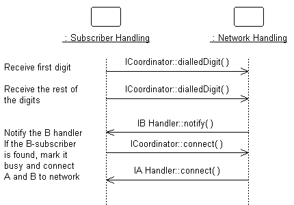

Roles and Activities >
Developer Role Set >
Roles and Activities >
Developer Role Set >
 Designer >
Designer >
 Subsystem Design
Subsystem Design
Roles and Activities >
Developer Role Set >
Designer >
Subsystem Design
Activity:
| ||||||||||||||||||||||||||
Purpose
|
|
| Steps | |
| Input Artifacts: | Resulting Artifacts: |
| Frequency: Once per Design Subsystem | |
| Role: Designer | |
| Guidelines: | |
| Tool Mentors: | |
| More Information: | |
| Workflow Details: |
Purpose
|
| Tool Mentor: Managing Subsystems Using Rational Rose |
The external behaviors of the subsystem are defined by the interfaces it realizes. When a subsystem realizes an interface, it makes a commitment to support each and every operation defined by the interface. The operation may be in turn realized by:
The collaborations of model elements within the subsystem should be documented using sequence diagrams which show how the subsystem behavior is realized. Each operation on an interface realized by the subsystem should have one or more documenting sequence diagrams. This diagram is owned by the subsystem, and is used to design the internal behavior of the subsystem.
If the behavior of the subsystem is highly state-dependent and represents one or more threads of control, state machines are typically more useful in describing the behavior of the subsystem. State machines in this context are typically used in conjunction with active classes to represent a decomposition of the threads of control of the system (or subsystem in this case), and are described in statechart diagrams, see Guidelines: Statechart Diagram.
In real-time systems, the behavior of Artifact: Capsules will also be described using state machines.
Within the subsystem, there may be independent threads of execution, represented by active classes.
In real-time systems, Artifact: Capsules will be used to encapsulate these threads.
Example:
The collaboration of subsystems to perform some required behavior of the system can be expressed using sequence diagrams:

This diagram shows how the interfaces of the subsystems are used to perform a scenario. Specifically, for the Network Handling subsystem, we see the specific interfaces (ICoordinator in this case) and operations the subsystem must support. We also see the NetworkHandling subsystems is dependent on the IBHandler and IAHandler interfaces.
Looking inside the Subsystem, we see how the ICoordinator interface is realized:

The Coordinator class acts as a "proxy" for the ICoordinator interface, handling the interface operations and coordinating the interface behavior.
This "internal" sequence diagram shows exactly what classes provide the interface, what needs to happen internally to provide the subsystem’s functionality, and which classes send messages out from the subsystem. The diagram clarifies the internal design, and is essential for subsystems with complex internal designs. It also enables the subsystem behavior to be easily understood, hopefully rendering it reusable across contexts.
Creating these "interface realization" diagrams, it may be necessary to create new classes and subsystems to perform the required behavior. The process is similar to that defined in Use Case Analysis, but instead of Use Cases we are working with interface operations. For each interface operation, identify the classes (or in some cases where the required behavior is complex, a contained subsystem) within the current subsystem which are needed to perform the operation. Create new classes/subsystems where existing classes/subsystems cannot provide the required behavior (but try to reuse first).
Creation of new classes, active classes and subsystems should force reconsideration of subsystem content and boundary. Be careful to avoid having effectively the same class in two different subsystems. Existence of such a class implies that the subsystem boundaries may not be well-drawn. Periodically revisit Activity: Identify Design Elements to re-balance subsystem responsibilities.
Purpose
|
| Tool Mentor: Managing Subsystems Using Rational Rose |
To document the internal structure of the subsystem, create one or more class diagrams showing the elements contained by the subsystem, and their associations with one another. One class diagram should be sufficient, but more can be used to reduce complexity and improve readability.
An example class diagram is shown below:

Example Class Diagram for an Order-Entry System.
In addition, a statechart diagram may be needed to document the possible states the subsystem can assume, see Guidelines: Statechart Diagram.
The description of the classes contained in the subsystem itself is handled in the Activity: Class Design.
Purpose
|
| Tool Mentor: Managing Subsystems Using Rational Rose |
When an element contained by a subsystem uses some behavior of an element contained by another subsystem, a dependency is created between the enclosing subsystems. To improve reuse and reduce maintenance dependencies, we want to express this in terms of a dependency on a particular interface of the subsystem, not upon the subsystem itself nor on the element contained in the subsystem.
The reason for this is two-fold:
In creating dependencies, ensure that there are no direct dependencies or associations between model elements contained by the subsystem and model elements contained by other subsystems. Also ensure that there are no circular dependencies between subsystems and interfaces; a subsystem cannot both realize an interface and be dependent on it as well.
Dependencies between subsystems, and between subsystems and packages, can be drawn directly as shown below. When shown this way, the dependency states that one subsystem (Invoice Management, for example) is directly dependent on another subsystem (Payment Scheduling Management).

Example of Subsystem Layering using direct dependencies
When there is a potential for substitution of one subsystem for another (where they have the same interfaces), the dependency can be drawn to an interface realized by the subsystem, rather than to the subsystem itself. This allows any other model element (subsystem or class) which realizes the same interface to be used. Using interface dependencies allows flexible frameworks to be designed using replaceable design elements.

Example of Subsystem Layering using Interface
dependencies
|
Rational Unified
Process
|